
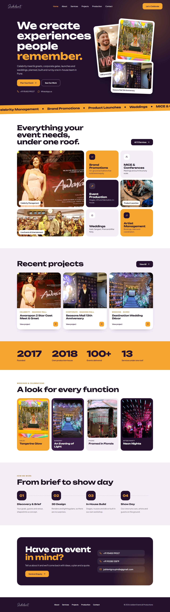

Choose your website design
Six homepage designs for Jubilant Events & Productions, each with its own layout, colours and fonts. They all use your real services, projects and event photos. Tap an option, switch between phone and computer view, then tell us the letter you like best.
A Cinematic GlowB Noir ShowreelC Bright StudioD Grand StageE Luxe MinimalF Festive Modern
A
Cinematic Glow
Light, warm and photo-led. A full-screen photo slideshow, softly glowing sections and frosted cards. The current website, refined.
Best for: a welcoming feel that suits both corporate events and weddings.
Colours
Ink #16150FAntique Gold #AD8752Champagne #F3DCB0Pearl #FBF8F4
Fonts
Homepage structure Hero photo slideshow Our story + highlight reel Services Why choose us (dark band) Wedding themes Featured project Clients Enquiry band + footer
Phone view Computer view
Show full homepage
B
Noir Showreel
Dark, cinematic and high-end, like a stage just before the lights come up. Large editorial type, services as an index and full case studies.
Best for: a bold, premium production-house image where the photos stand out most.
Colours
Noir #0D0C0FGraphite #16151AChampagne #D6B77EIvory #F3EFE7
Fonts
Homepage structure Hero with key numbers Services marquee Services index Selected work (3 case studies) In-house production How we work Clients Large enquiry footer
Phone view Computer view
Show full homepage
C
Bright Studio
Bright, modern and quick to scan. A split hero with a photo mosaic, a "What are you planning?" chooser and the enquiry form right on the homepage.
Best for: turning visitors into enquiries fast, with a fresh, contemporary look.
Colours
Ink #111115Apricot #EF8F5EApricot Soft #FDE8DCMist #F3F4F6
Fonts
Homepage structure Hero + photo mosaic Client logos What are you planning? (tabs) Recent work mosaic Key numbers Wedding themes Enquiry form Footer
Phone view Computer view
Show full homepage
D
Grand Stage
Immersive and photo-first. Full-width event photos with frosted-glass panels, a floating glass navbar and a services slider. Feels like walking into the event.
Best for: showing the scale and energy of real events, like a showreel on a page.
Colours
Midnight #0B0B12Night Slate #14141DGold #E0B973Pearl #F5F3EF
Fonts
Homepage structure Full-screen hero + glass contact card Glass key-numbers strip Services photo slider Full-width featured project Full-width second project In-house production (inventory tiles) Wedding themes Glass enquiry form over photo
Phone view Computer view
Show full homepage
E
Luxe Minimal
Quiet luxury, like a five-star hotel website. Generous white space, fine serif type, a centred logo and large photographs with thin captions.
Best for: a refined, high-end image for premium corporate and wedding clients.
Colours
Charcoal #1E1C1ABronze #9A7447Porcelain #F5F4F1White #FFFFFF
Fonts
Homepage structure Centred-logo navbar Large headline + wide photograph Our story + key numbers Services in four groups Selected work (editorial grid) Our approach (quote) Wedding themes Contact details + enquiry form
Phone view Computer view
Show full homepage
F
Festive Modern
Bold, joyful and celebratory. Deep aubergine with marigold, a stack of tilted event photos, colour-blocked service tiles and a slanted marquee.
Best for: standing out with energy and colour, especially for weddings and celebrations.
Colours
Aubergine #24122EPlum #3A1D47Marigold #F3A52FLilac Mist #F3EEF6
Fonts
Homepage structure Bold hero + photo stack Slanted services marquee Colour-blocked services Recent projects cards Key numbers band Wedding themes (one colour each) How we work (4 steps) Enquiry card + footer
Phone view Computer view


Show full homepage
Which one do you like?
Reply to RaRi Softworks with the letter of your favourite (A to F), plus anything you would change. You can also mix, for example "the layout of D with the colours of A".